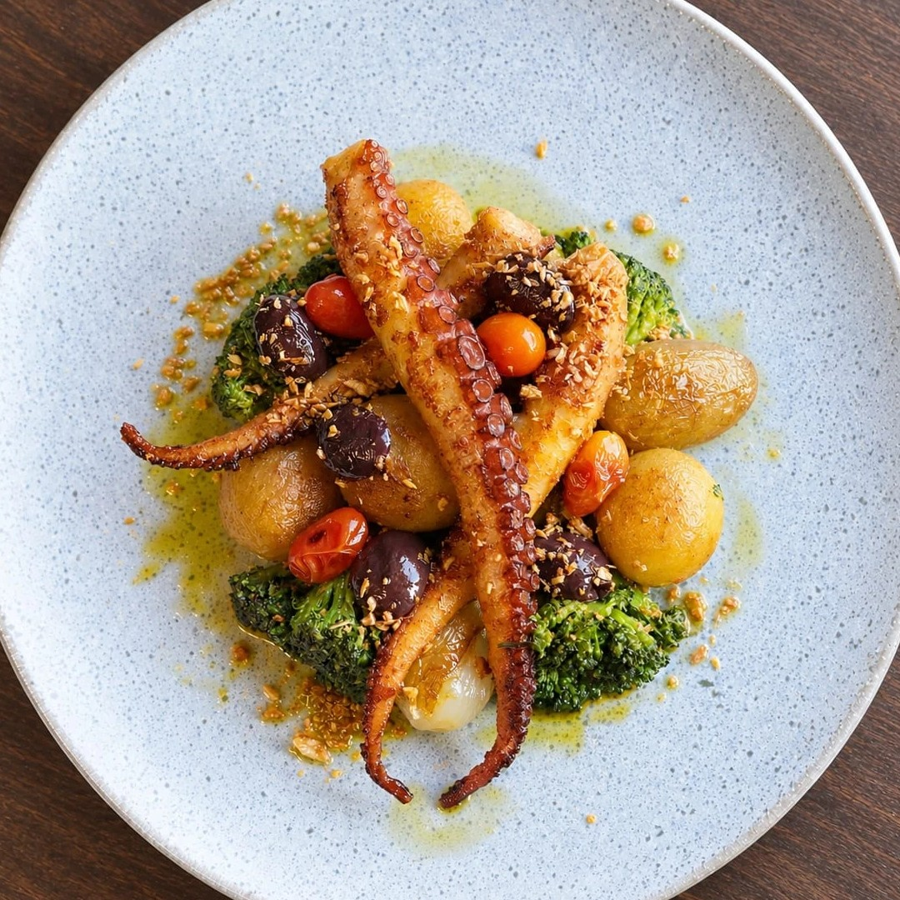
Feito à mão. Servido no ponto.
Culinária internacional em Araraquara
Massas artesanais, peixes e carnes
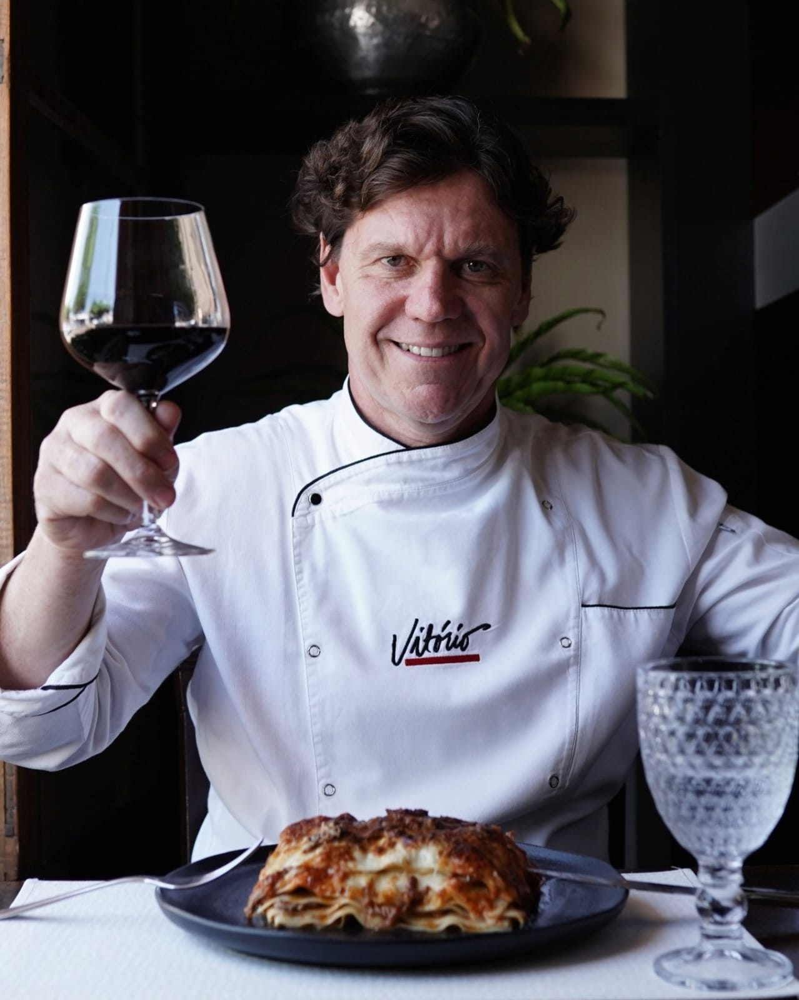
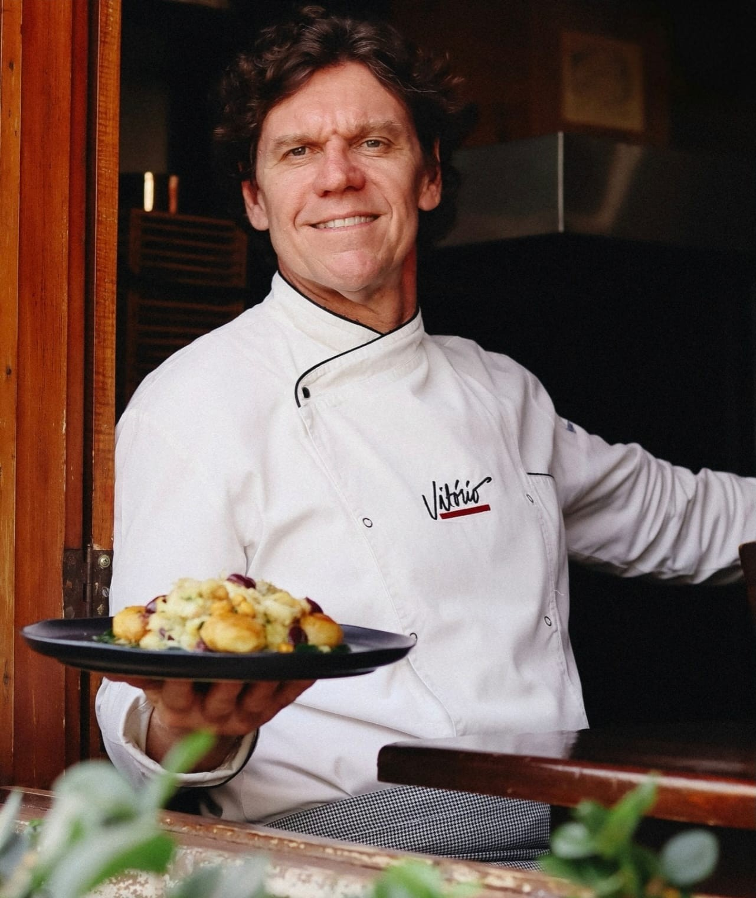
Gustavo Oliveira
É ele quem assina a cozinha do Vitório, na Av. Dom Pedro II: culinária internacional construída sobre massas artesanais, peixes e carnes.
As massas saem da própria cozinha, os filés chegam à mesa acompanhados de risoto e a carta fecha com vinhos e sobremesas da casa. Do filé ao gorgonzola com risoto de alho-poró ao camarão à provençal com risoto de bisque, o cardápio é o retrato do jeito do chef cozinhar.
Nas avaliações de quem frequenta a casa, dois conselhos se repetem: provar os risotos e, se tiver a chance, conhecer o chef Gustavo.
- 25 anosem Araraquara
- Massas à mãoespecialidade
- 4,8 no Googlemais de 1.200 avaliações
Pratos da casa
Quatro pratos do cardápio, do jeito que chegam à mesa.
-
Carnes
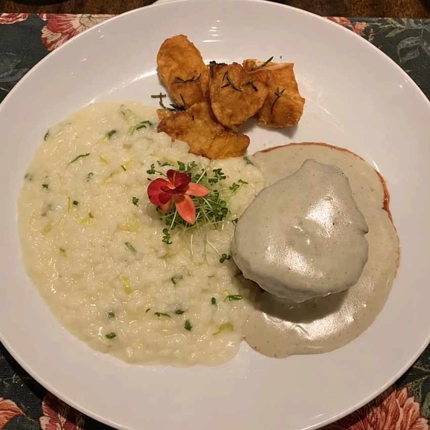
Filé ao molho de gorgonzola
Acompanha risoto de alho-poró e batata rústica.
R$ 103 -
Massas artesanais
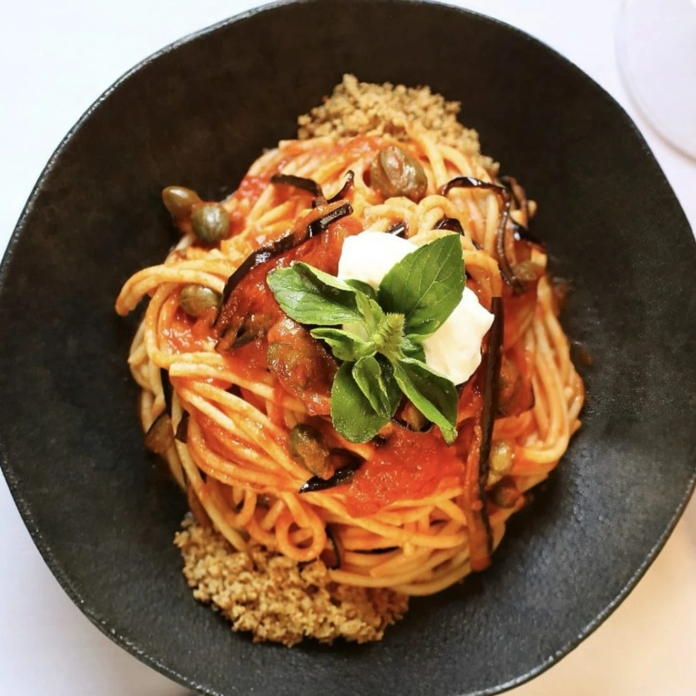
Spaghetti alla Norma
Molho sugo, berinjela, alcaparra e burrata cremosa.
R$ 80 -
Peixes
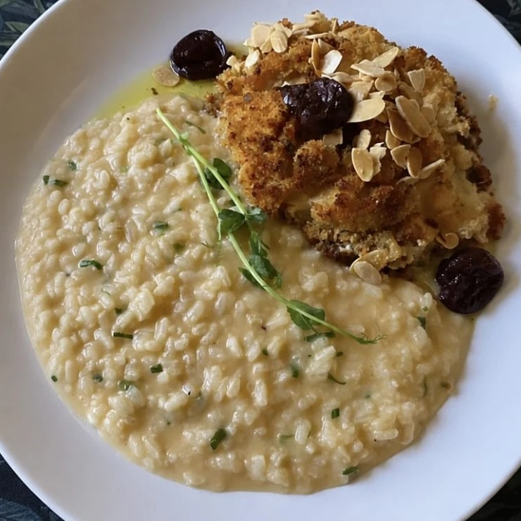
Salmão em crosta de amêndoas
Com molho de limão. Acompanha risoto de alho-poró.
R$ 105 -
Sobremesas
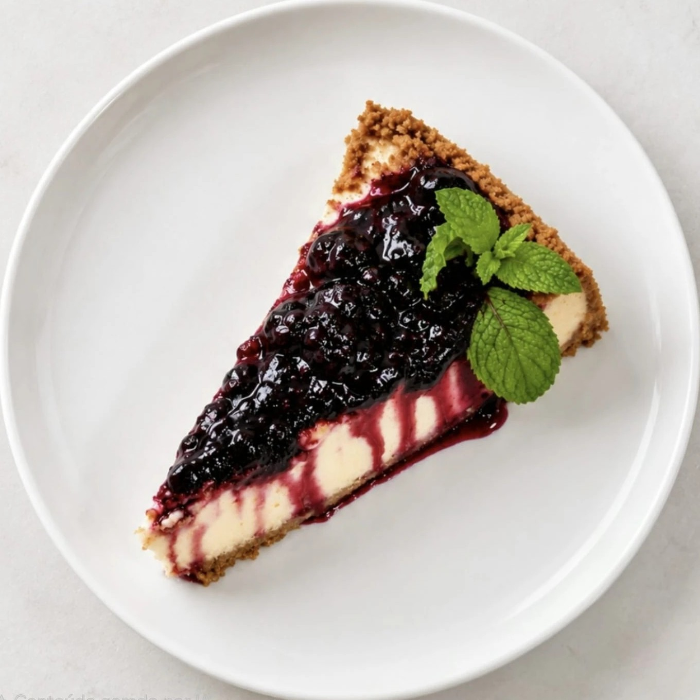
Cheesecake de amora
Calda de amora e folhas de hortelã.
R$ 33
…pedi o prato de risoto de alho poró com salmão com crosta de amêndoas e foi espetacular.Gisele, no Google
Tudo impecável! O serviço é realmente 5 estrelas…Stefanny, no Google
Excelente restaurante, com boas opções de carnes, peixes e massas.Murilo, no Google
O atendimento é acolhedor e atencioso. Gosto da música ambiente e do clima.Gisele, no Google
Uma história construída ao redor da mesa.
Há 25 anos, o Vitório ocupa um lugar especial na gastronomia de Araraquara. Uma trajetória feita de cozinha consistente, cuidado no servir e relações que amadureceram junto com a casa.
O tempo trouxe novas histórias, novos encontros e novos sabores, preservando a identidade que fez do Vitório parte da vida da cidade.
Reservar uma mesa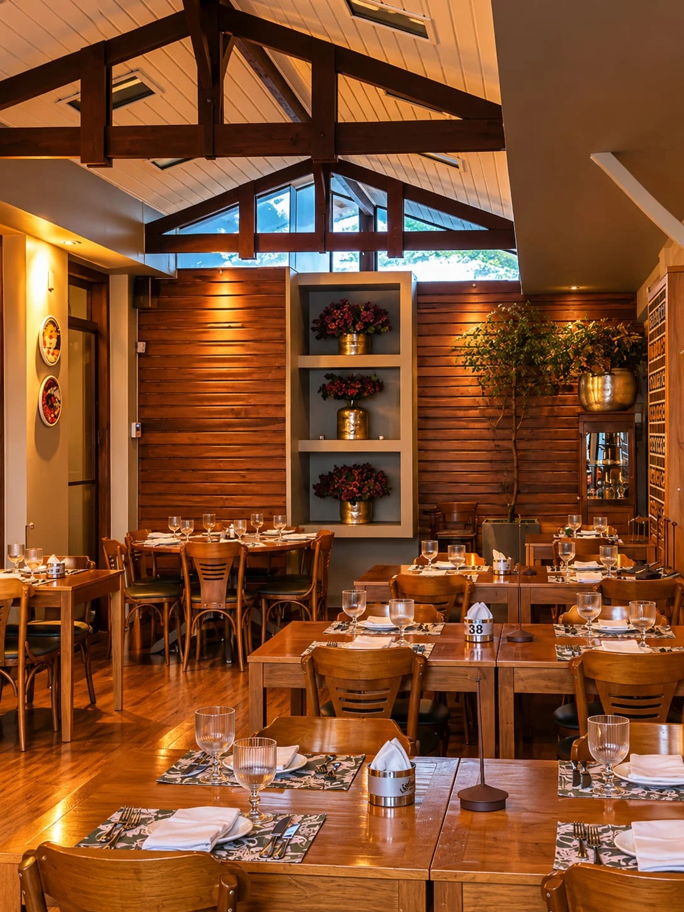
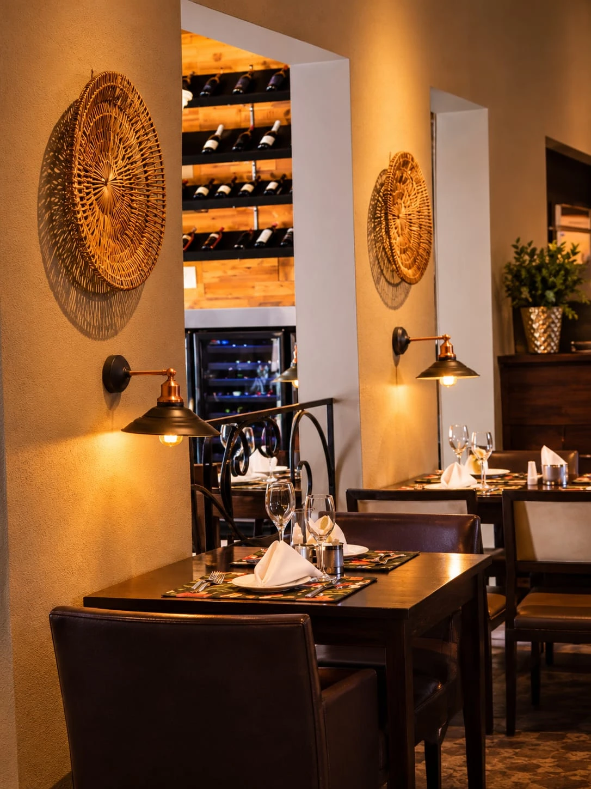
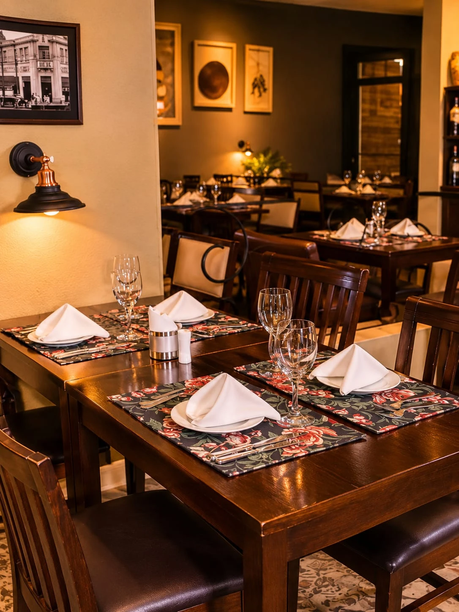
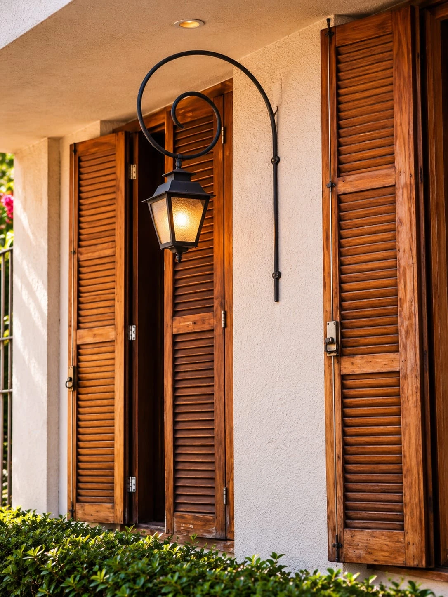
O menu
Preços em reais.
Cesto de pães
25Couvert
40Acompanha cesto de pães.
Bruschetta tradicional
75Tomate concassé, manjericão e parmesão.
Bruschetta com mussarela de búfala e linguiça de javali
80Burrata com berinjela agridoce e tomate concassé
80Acompanha pão italiano.
Arancini de funghi recheado com queijo 8 unidades
55Mini bolinho de bacalhau 12 unidades
65Steak tartare
95Acompanha batata rústica ou salada de rúcula.
Carpaccio
65Tábua de frios e queijos
90Salada de bacalhau
75Folhas verdes, lascas de bacalhau, grão-de-bico e azeitona preta.
Salada de pera
60Folhas verdes, pera, gorgonzola e castanha-do-pará.
Salada Caesar
60Frango crocante, molho caesar, croutons e parmesão.
Spaghetti alla Norma
80Molho sugo, berinjela, alcaparra e burrata cremosa.
Spaghetti bacalhau
103Tomate, azeitona preta e azeite.
Spaghetti frutos do mar
103Fettuccine camarão ao molho de limão levemente picante
103Fettuccine com ragu de cordeiro
98Fettuccine ao molho de limão e chips de Parma
98Penne à matriciana
85Molho sugo, guanciale, pimenta calabresa, parmesão e manjericão.
Lasanha tradicional
90Gnocchi recheado
90Grelhado, recheado com mussarela de búfala ao molho napolitano.
Gnocchi com lula e polvo
103Ravióli de mussarela de búfala
90Molho de tomate (servido no prato).
Sorrentino de costela
95Molho de tomate com fonduta de parmesão.
Rigatoni recheado com queijo ao molho funghi
95
Atum em crosta de gergelim e molho de limão
115Atum mal passado. Acompanha arroz negro.
Salmão em crosta de amêndoas e molho de limão
105Acompanha risoto de alho-poró.
Abadejo provençal
125Posta de abadejo grelhado no azeite e alho. Acompanha batatinha, mini cebola e tomatinho confitados e brócolis.
Abadejo recheado com camarão e cream cheese
135Acompanha risoto de bisque.
Abadejo mediterrâneo
125Acompanha risoto de castanha-do-pará com hortelã.
Bacalhau Vitório
150Lascas de bacalhau com alho-poró, grão-de-bico, cebola, azeite e batatas confitadas.
Bacalhau provençal
175Posta de bacalhau com azeite e alho. Acompanha batatinha, mini cebola e tomatinho confitados e brócolis.
Camarão à provençal
160Camarões grandes grelhados com azeite e alho. Acompanha risoto de bisque.
Filé ao molho de gorgonzola
103Acompanha risoto de alho-poró e batata rústica.
Filé com cogumelos frescos e amêndoas
103Acompanha gnocchi na manteiga de ervas.
Steak ao poivre vert
120Acompanha gnocchi recheado com mussarela de búfala na manteiga de ervas.
Tagliata de black angus denver steak
140Acompanha gnocchi grelhado, rúcula e molho de mostarda.
Chorizo com azeite e alho
130Acompanha fettuccine com shitake, champignon e alho-poró.
Prime rib black angus
160Acompanha risoto mulato.
Paleta de cordeiro cozida por 14 horas serve 3 a 4 pessoas
350Acompanha batata, legumes confitados e cogumelos.
Torta de morango
37Cheesecake de amora
33Mil-folhas de morango
37Torta ganache de chocolate e nozes
38Fudge de chocolate com sorvete de creme
39Banana crocante com doce de leite e sorvete de creme
33Crème brûlée
31Sorvete Vitório
42Sorvete de creme, ganache de chocolate, farofa crocante e chantilly.
Cervejas especiais
Colorado Cauim
25Colorado Appia
25Colorado Demoiselle
25Colorado Indica
25Opera IPA
29Opera Weissbier
20Theresópolis Gold
20,50Heineken 600 ml
14,90Heineken long neck
9,50Corona long neck
10,20
Outras cervejas, água e refrigerante
Serramalte 600 ml
15Long neck
9Malzbier long neck
9Água mineral 500 ml
8Refrigerante
8
Sucos
Abacaxi
9Abacaxi com hortelã
9Acerola
9Laranja
9Laranja com acerola
9Limão
9Maracujá
9Morango
9Frutas vermelhas
10Mix
10Tomate
12Suco de uva orgânico Só garrafa 300 ml
17
Escalopinho com arroz e fritas
65Spaghettinho
60Molho branco, sugo ou bolonhesa.
Escalopinho grelhado
40Sem guarnição.
Exclusivo para crianças até 10 anos.
À mesa
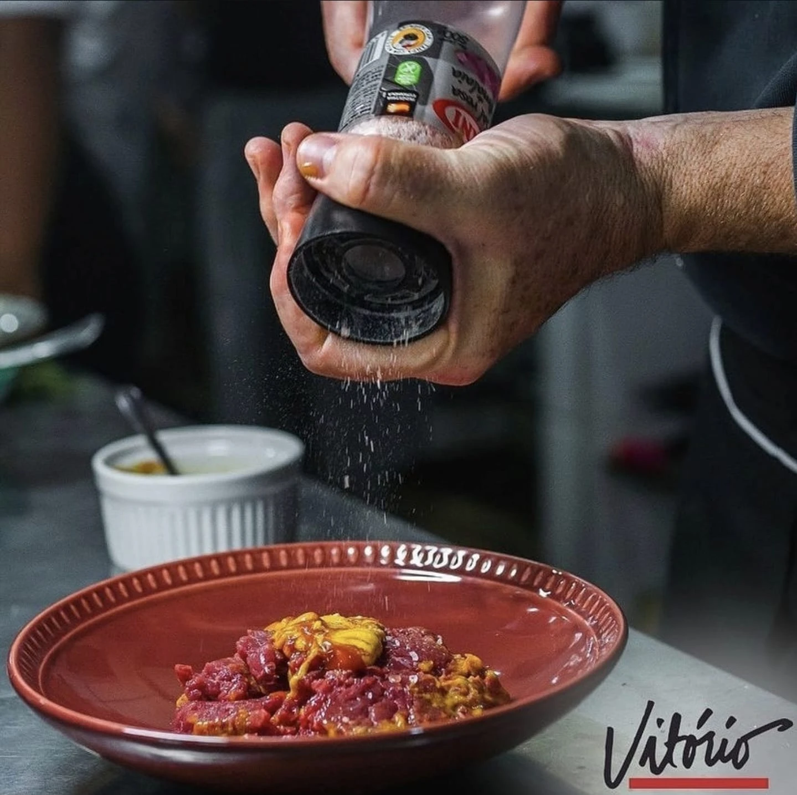
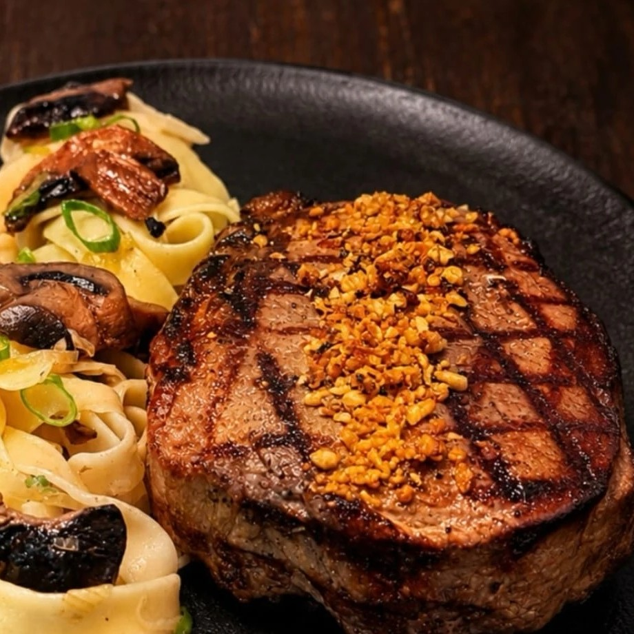
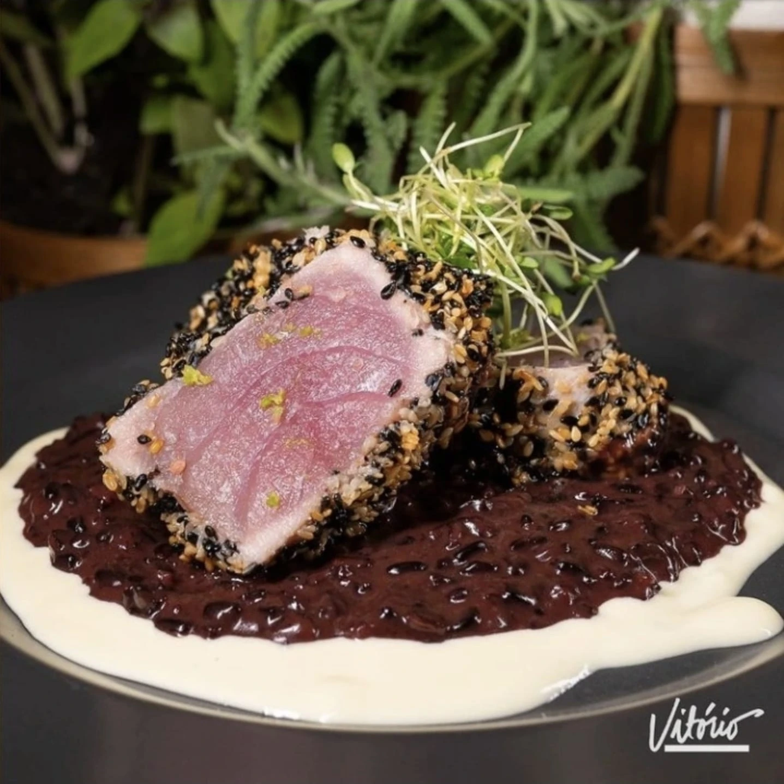
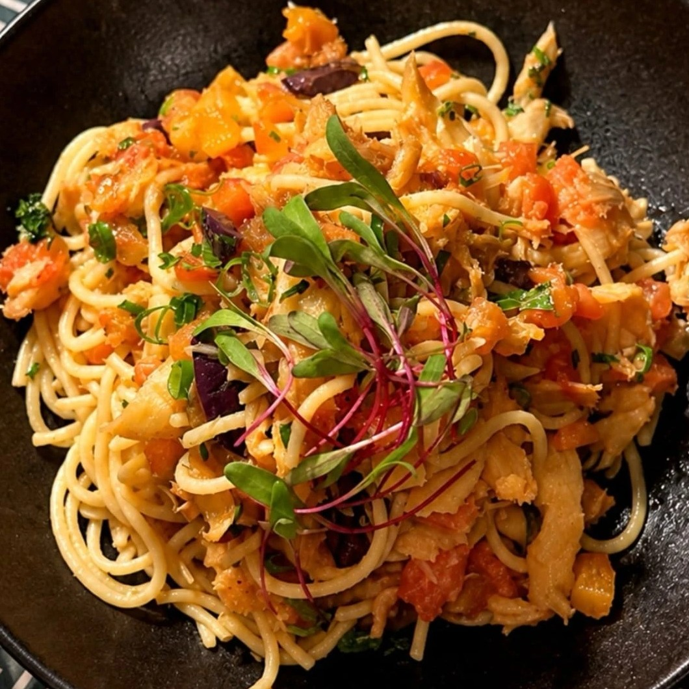
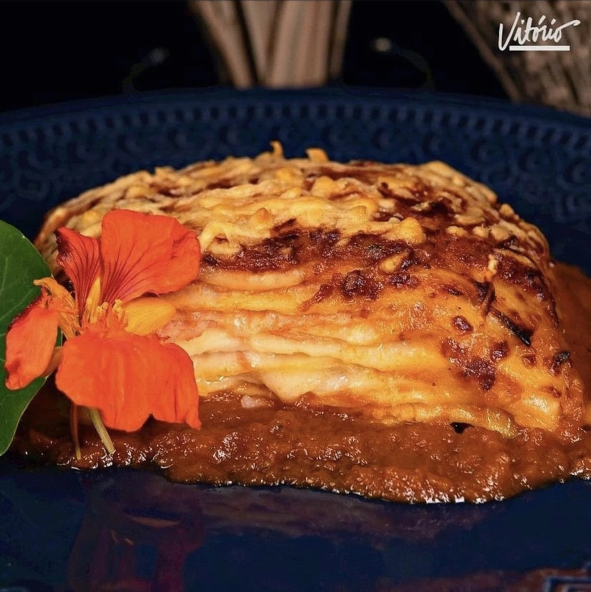
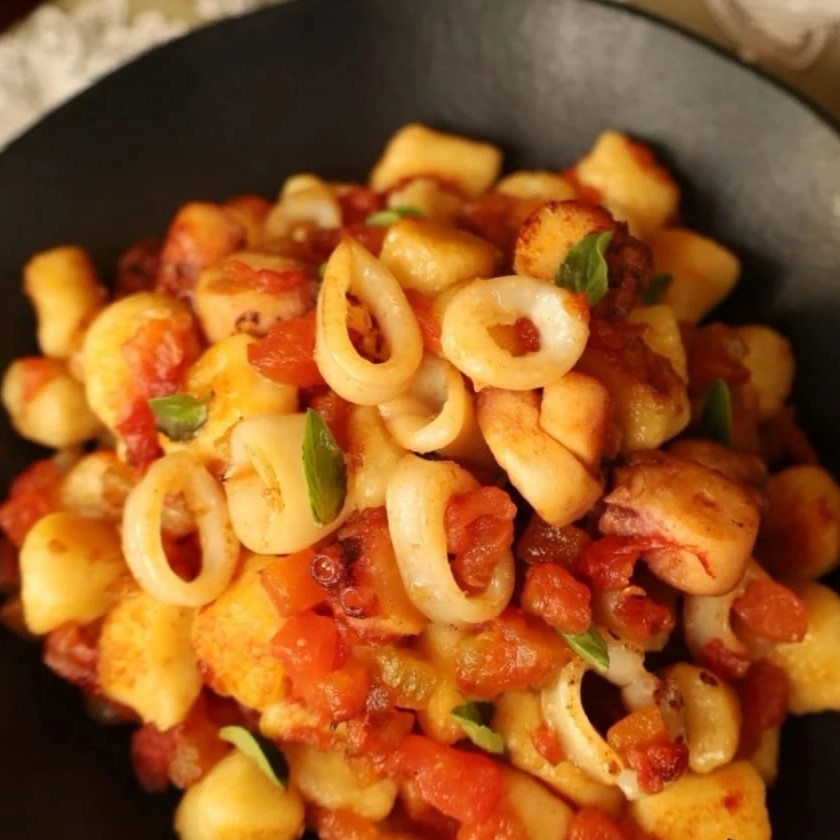
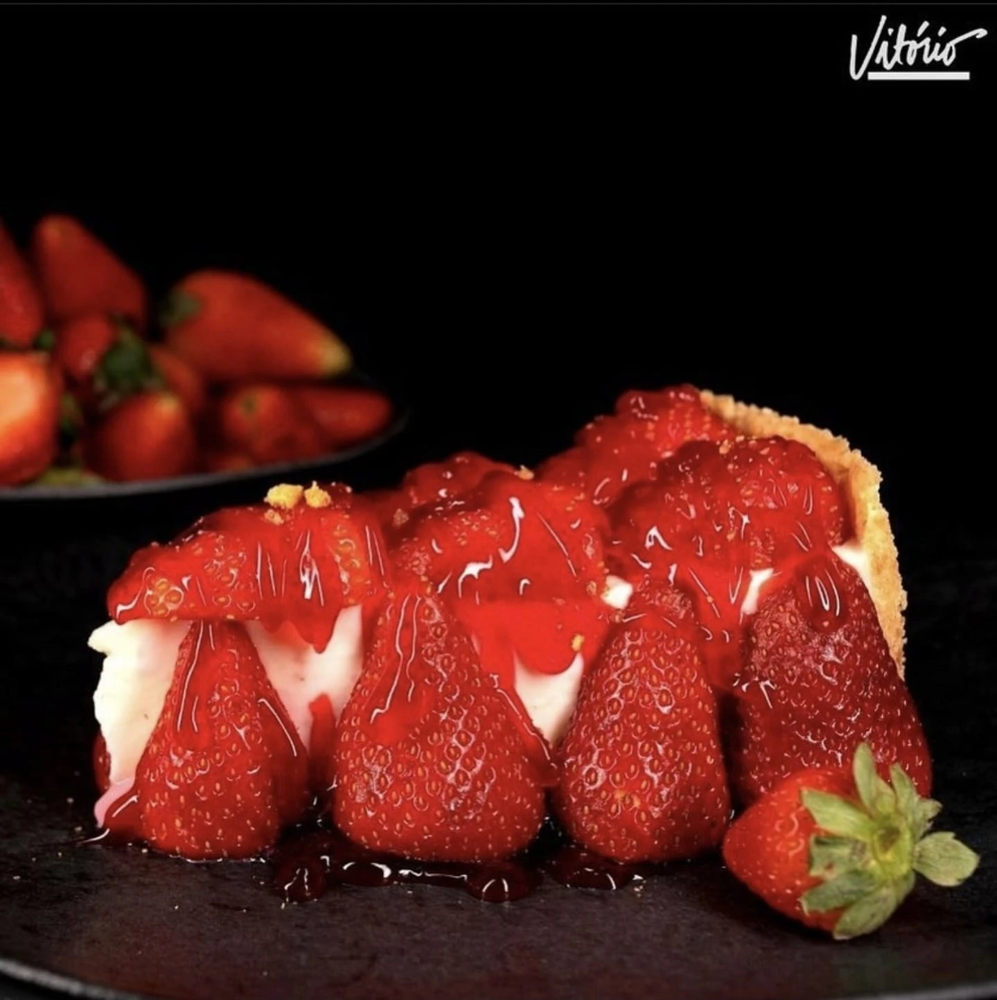
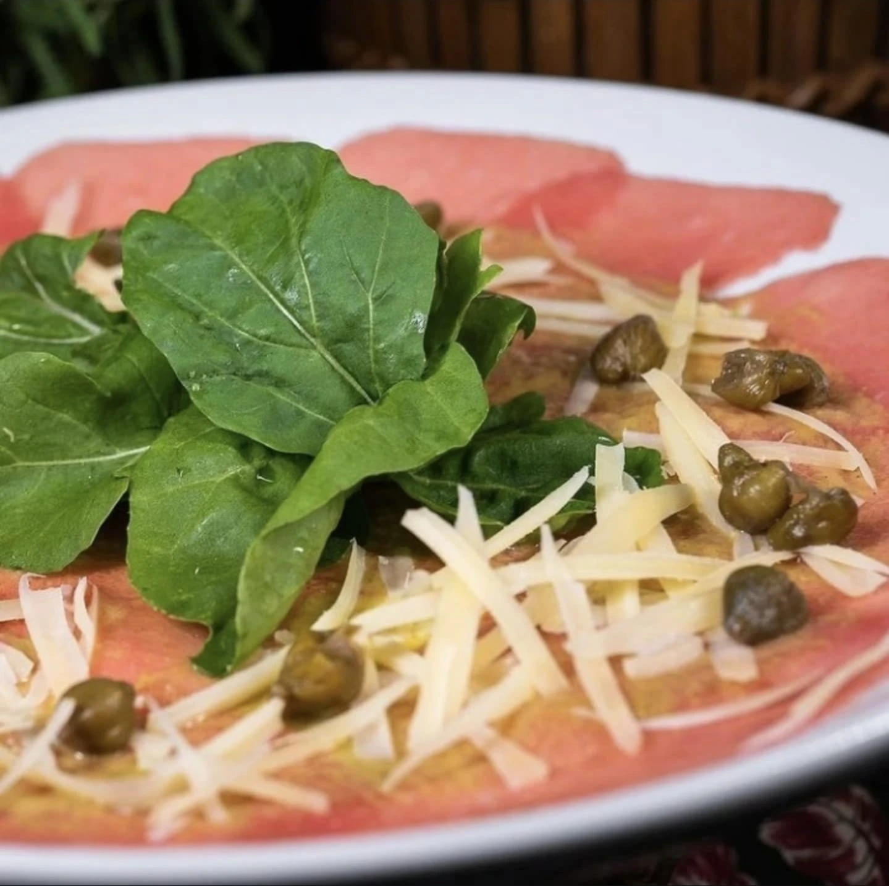
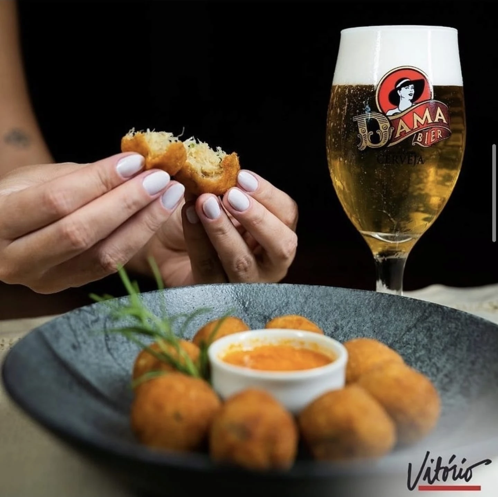
Mais no Instagram: @restaurantevitorio
Av. Dom Pedro II, 1432
Jardim do Carmo · Araraquara – SP · 14801-040
Horários
| Domingo | 12h – 15h |
|---|---|
| Segunda | Fechado |
| Terça | 18h45 – 22h15 |
| Quarta | 18h45 – 22h15 |
| Quinta | 18h45 – 22h15 |
| Sexta | 18h45 – 22h15 |
| Sábado | 12h – 14h15 · 18h45 – 22h15 |
Em feriados o horário pode mudar.
Reservas e contato
- (16) 98193-7333
- Telefone
- (16) 3322-2739
- @restaurantevitorio
- /vitorioararaquara